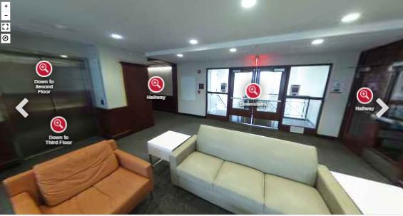
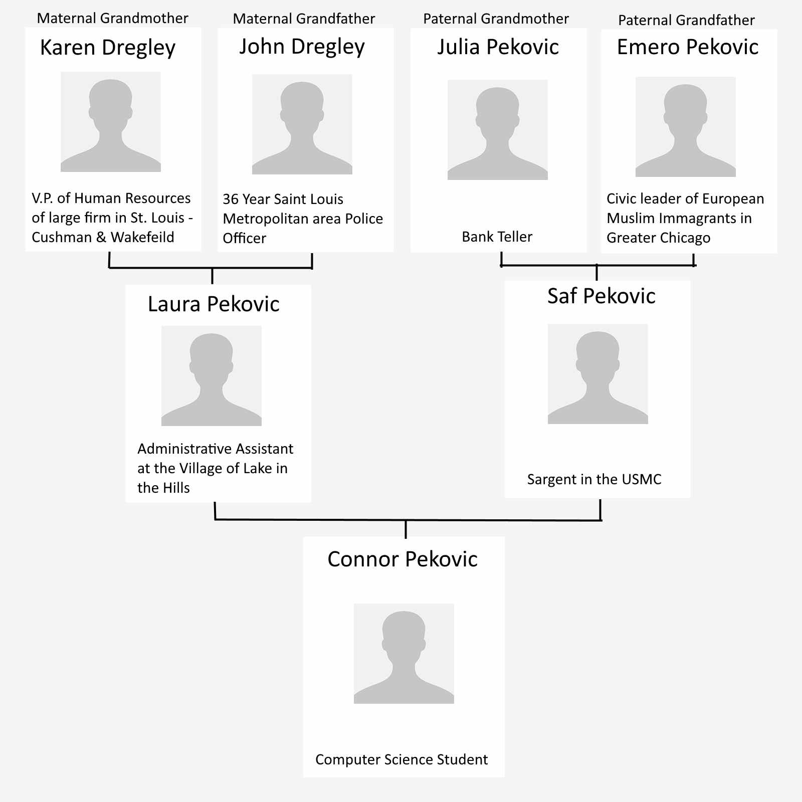

Connor John Pekovic
connorpekovic1@gmail.com
815-261-2388
Thanks for noticing me. This is my second year and a half studying Computer Science and I've got the hang of
everything at least a little bit by now. I promise to be a creative, honest, and polite member of your organization after my graduation in December of 2019.
For the summer of 2019, I'm looking for a paid position in an organization that does cool stuff or treats me well.
I'm seeking to use my newly learned computer and project management skills to accomplish organizational goals with dedication and professionalism.
3.29 GPA
B.A. in Computer Science Enterprise Software
Minor in Business Adminstration
Project History
NIU Resident Hall Webpages

I successfully redesigned and coded the webpages for the N.I.U's five residence halls in accordance with
NIU's marketing standards.
I made this website all by myself without the use of WordPress nor templates demonstrate my web capabilities.
I wanted to make it fun and easy for potential employers to learn more about me beyond my resume.
In this project I...
Wrote custom JavaScript
Used Bootstrap CSS framework
Expresses myself
Established a Linux partition on my PC to deploy on Digital Ocean
Work History
Technology Assist. - Social Media and Graphic Design | NIU
I redesigned and coded the webpages for NIU's residence halls,
see above. I authored social media post and created flyers for Housing events using Illustrator.
It'd categorize the experience as marketing. My greatest takeaway from the experience having my boss educate on about modern website design one-on-one.
At age 18 I did Door to door sales selling coupon books and newspaper
subscriptions. I was really good but I left because I deemed it unethical. I had realizations of what it means to have ethics and the
importance of having hard skills.
Contact: Johnny Majcher
Phone - 815-903-3281
Email - jmajcher101@gmail.com
Family Work History

Skills and Qualities
Upstanding Ethics
My calming demeanor led me to consistently met and exceed sales goals as a Door to Door sales person, but I eventually realized it
wasn't nice to bother people at their homes.
After that in Community College, my humanities courses opened my eyes. I had a great experience reading my philosophy text book front-to-back.
The humanities shaped my world view in a positive way.
Web Development
I hand coded this website without the assistance of templates nor WordPress so demonstrate my ability to do reasonably complex things.
This site is hosted by DigitalOcean, which is a server I interact with though a command line or FTP like FileZilla.
I design with assistance from Bootstrap 4.0 and I can implement JavaScript. In my projects, I've
demonstrated the capability to conform to marketing standards and I follow to w3schools.com web standards to ensure browser compatibility.
Databases and Servers
I have good understanding about using databases from doing well in my Databases
class at NIU. In regards to servers, I'm new but I successfully used a virtual private server to host this site, Digital Ocean, which
I have to SSH into off a UNIX command line to maintain.
Currently for a class project, I'm using SQL, PHP, and HTML to build a website that interacts with the school's database.
I did a project like this last year that's on my GitHub, but after this project I should have the process down pat.
Linux/UNIX Command Line
I have moderate understanding about using the command line. I received an A for my Linux/UNIX System
class at NIU.
With NIU, I used PowerShell to render 360 photos for the web because the university doesn't want Linux partitions on their
computers.
For this website, I established a Ubuntu partition on my PC to interact with the server at DigitalOcean to get a really good deal on web hosting.
Project Management and Virtual Teams
For the three months, my superior taught me modern web design over Microsoft SharePoint, Teams, and GitLab.
Now I know my way around virtual team software and I've seen how to use comment mark up to it's fullest advantage.
I like virtual teams because everyone gets more time to digest big thoughts and contribute more thought-out responses.
On the other hand, I acknowledge one-on-one is more effective.
Business Literate
I'll graduate with a Minor in Business Administration from the well renowned NIU College of Business. To get a Minor I took:
Principals of Accounting
Principals of Management
Principals of Marketing
Principals of Operation Management
This isn't enough training to make a business all-star right out of college, but it's a good start.
Calming Demeanor
I inherited my mothers wide vocabulary and I make an effort to sound educated without overcomplicating the point.
I've repeatedly shown the ability to maintain composer when discussing details of large projects.
At 18, when I was doing Door to door sales, I can truly say no one raised their voice with me at their from door. In fact, I had
a lot of really interesting conversations with some really smart people.
My co-workers weren't as lucky.
Eager to Learn
I like the process of learning a new system and giving problems the old college try. I don't lock-up in the face of confusion,
instead I become investigative.
Since I was 19 I've always been on a chase to learn to use some complex new software. Starting with Illustrator, then
Abelton, now I'm into coding because of the influence from school. I'm in a never ending chase
to harness the power of computers to capture peoples attention in hopes of being able to influence people for good.
Upstanding Ethics
My calming demeanor led me to consistently met and exceed sales goals when working Door to Door sales. Then in community college, I was
influenced by my humanities as it shaped my world view in a positive way.
Web Development
I made this website mobile friendly with the skills I learned from the Hall Pages project I completed this summer for NIU's Housing Department.
Databases and Servers
In regards to servers, I'm new but I successfully used a virtual private server to host this site, Digital Ocean, which
I have to SSH into off a UNIX command line to maintain. In regards to databases, I do projects for NIU interacting with the school's
databases with SQL and PHP in many of my classes.
Command Line
I'm an above average user of the UNIX command prompt and PowerShell command prompt for Windows.
Project Management and Virtual Teams
This Summer of 2018, I experienced working on a large website project in a virtual team with my superior to communicate the direction
of the project.
Business Literate
I have a minor in Business Administration from the accredited NIU School of Business.
Calming Demeanor
Proven, effective written and verbal communication skills for requirements gathering. Ability to listen to technical topics and I can
simplify concepts and respond appropriately.
Eager to Learn
I like the process of learning a new system and giving problems the old college try. I don't lock-up in the face of confusion,
instead I become investigative.
Certifications
View my official Lynda.com certifications here,
which is an accredited online learning platform owned by LinkedIn. In summary, the certification titles are:
HTML Essential Training
Web Development Foundations: Full-Stack vs. Front-End
JavaScript Essential Training
Java 8 Essential Training
Git Essential Training
C++ Pointers
Books I've read
How to Win Friends and Influence People by Dale Carnegie
Self-help book that covers techniques for handling people. It helped me preform better as a
Door to Door salesperson.
Jack: Straight from the Gut by Jack Welch
Former General Electric CEO surveys his career and his rise to the top of America's largest corporation.
He discusses the importance of values, candor, differentiation, and voice and dignity for all.
Social and Political Philosophy: Readings from Plato to Gandhi.
It's a collection secular societies dearest passages, I read this book front-to-back
and it had a positive impact on my world view. Below are the 3 parts I align my views with the most.
John Dewey: Restructuring of Philosophy
Jean Jacques Rousseau: The Social Contract
Niccolo Machiavelli: The Prince
Poised to Learn Next
Things I want to do next with my education. This gives insight to where my mind is at.
Code a news network out of websites and apps, then recruit my peers to assist me in making unbiased content